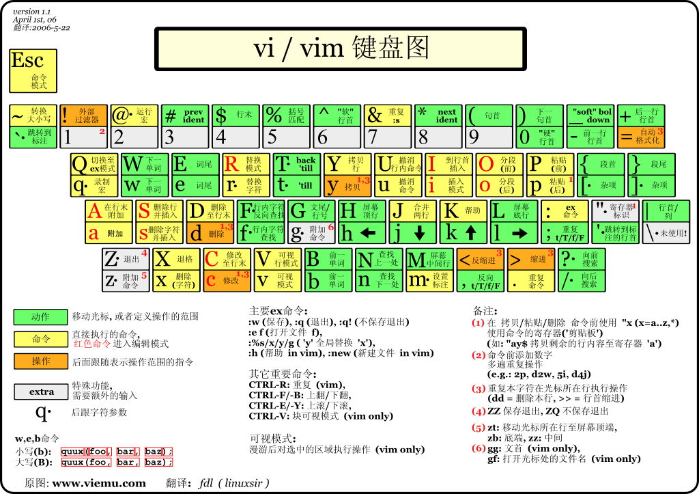

VIM
Vim是从 vi 发展出来的一个文本编辑器
一、VIM模式
6种基本模式
- 普通模式（Normal）
- 插入模式（INSERT）
- 可视模式（VISUAL）
- 选择模式（SELECT）
- 命令行模式（Command line）
- Ex模式
二、模式切换
1. 普通模式切换到插入模式
| 按键 |
说明 |
助记 |
i |
在当前光标处进行编辑 |
insert |
I |
在行首插入 |
Insert |
a |
在光标后插入编辑 |
append |
A |
在行末插入 |
Append |
o |
在当前行后插入一个新行 |
open |
O |
在当前行前插入一个新行 |
Open |
2.普通模式切换到命令行模式
普通模式下按下:
3.普通模式切换到可视模式
普通模式下输入
| 命令 |
说明 |
v |
进入字符选择模式，再次按下后取消选取 |
V |
进入行选择模式，再次按下后取消选取 |
Ctrl + v |
进入区域选择模式，再次按下后取消选取 |
4.切换到普通模式
| 命令 |
说明 |
[ESC] |
切换到普通模式 |
Ctrl + c |
切换到普通模式 |
Ctrl + [ |
切换到普通模式 |
三、退出
1. 使用命令行模式退出
| 命令 |
说明 |
:q |
退出 |
:q! |
强制退出 |
:wq |
保存退出 |
:wq! |
强制保存退出 |
:x |
保存并退出 |
:w <文件路径> |
另存为 |
:saveas <文件路径> |
另存为 |
2. 普通模式下退出
三、游标移动
1. 在普通模式下移动
1. 普通移动
| 按键 |
说明 |
h |
光标左移 |
j |
光标下移 |
k |
光标上移 |
l |
光标右移 |
{n}h |
光标左移n 个位置，n(umber) 指数字 |
{n}j |
光标下移n 个位置，n(umber) 指数字 |
{n}k |
光标上移n 个位置，n(umber) 指数字 |
{n}l |
光标右移n 个位置，n(umber) 指数字 |
2. 光标跳转
1. 行间跳转
| 命令 |
说明 |
{n}G |
移动到第n行 |
gg |
移动到第一行 |
G |
移动到最后一行 |
Ctrl + o: 快速回到上一次(跳转前)光标所在位置
2. 行内跳转
| 命令 |
说明 |
助记 |
w |
到下一个单词的开头 |
word |
e |
到当前单词的结尾 |
end |
b |
到前一个单词的开头 |
back-word |
ge |
到前一个单词的结尾 |
|
0 |
到行首 |
|
^ |
跳到行首开始的第一个非空白字符 |
|
$ |
到行尾 |
|
f<字母> |
向后搜索<字母>并跳转到第一个匹配的位置(非常实用) |
|
F<字母> |
向前搜索<字母>并跳转到第一个匹配的位置 |
|
t<字母 |
向后搜索<字母>并跳转到第一个匹配位置之前的一个字母(不常用) |
|
T<字母> |
向前搜索<字母>并跳转到第一个匹配位置之后的一个字母(不常用) |
|
3.按句子或段落移动
| 命令 |
说明 |
) |
向前移动一条句子 |
} |
向前移动一个段落 |
3. 在屏幕间移动
| 命令 |
说明 |
H |
向上移动一屏 |
M |
移动到屏幕中间 |
L |
移动到屏幕底端 |
Ctrl + u |
向上移动半屏 |
Ctrl + d |
向下移动半屏 |
Ctrl + f |
下一页 |
Ctrl + b |
上一页 |
Ctrl + e |
向下滚动一行 |
Ctrl + y |
向上滚动一行 |
2.在插入模式下移动
Alt + hjkl进入普通模式移动- 使用键盘上的方向键移动（效率低，不推荐）
四、删除文本
1. 在普通模式下删除
| 按键 |
说明 |
|
x |
删除游标所在的字符 |
|
X |
删除游标所在前一个字符 |
|
dd |
删除整行 |
delete |
{n}dd |
删除n行 |
|
d{n}w |
删除n个单词 |
|
d$ 或 D |
删除至行尾 |
|
d^ |
删除至行首 |
|
dG |
删除到文档结尾处 |
|
d1G |
删至文档首部 |
|
2.在插入模式下删除
| 按键 |
说明 |
| Backspace |
删除光标前一个字符 |
| Delete |
删除光标后一个字符 |
五、复制(yank）
| 命令 |
说明 |
y |
复制当前选择区域 |
yy 或 Y |
复制游标所在的整行 |
y^ 或 y0 |
复制至行首，不含光标所在处 |
y$ |
复制至行尾，含光标所在处字符。 |
yw |
复制一个单词 |
y2w |
复制两个单词 |
yG |
复制至文本末 |
y1G |
复制至文本开头。 |
六、粘贴
| 命令 |
说明 |
助记 |
p |
粘贴至光标后（下） |
paste |
P |
粘贴至光标前（上） |
paste |
七、替换
在普通模式下使输入
| 命令 |
说明 |
助记 |
r<待替换字母> |
将游标所在字母替换为指定字母 |
|
R |
连续替换，直到按下Esc |
|
cc |
替换整行，即删除游标所在行，并进入插入模式 |
change |
cw |
替换一个单词，即删除一个单词，并进入插入模式 |
|
C |
替换游标以后至行末 |
|
~ |
反转游标所在字母大小写 |
|
八、撤销
| 命令 |
说明 |
u{n} |
撤销一次或n次操作 |
U |
撤销当前行的所有修改 |
Ctrl + r |
redo，即撤销undo的操作 |
九、调整文本位置
命令行模式下输入
| 命令 |
说明 |
:ce |
(center)使本行内容居中 |
:ri |
(right)命令使本行文本靠右 |
:le |
(left)命令使本行内容靠左 |
十、查找
1. 快速查找
普通模式下输入
| 命令 |
说明 |
?<查找的字符串> |
向上查找 |
/<查找的字符串> |
向下查找 |
2. 高级查找
普通模式下输入
| 命令 |
说明 |
* |
向后（下）寻找游标所在处的单词 |
# |
向前（上）寻找游标所在处的单词 |
g* |
同* ，但部分符合该单词即可 |
g# |
同#，但部分符合该单词即可 |
n: 向下继续查找
N:向上继续查找
十一、多文件编辑
1. 使用vim编辑多个文件
| # 使用vim编辑多个文件
$ vim a.txt b.txt
|
命令行模式 下输入
| 命令 |
说明 |
:n |
切换到下一个文件，可以加! 强制切换（放弃当前修改） |
:N |
切换到上一个文件，可以加! 强制切换（放弃当前修改） |
2. 进入vim后打开新文件
命令行模式下输入
| 命令 |
说明 |
:e <文件名> |
打开新文件 |
:e# |
回到前一个文件 |
:ls |
列出以前编辑过的文档 |
:b <文件名>（或者编号） |
直接进入文件编辑 |
:bd <文件名>（或者编号）` |
删除以前编辑过的列表中的文件项目 |
e! <文件名> |
新打开文件，放弃正在编辑的文件 |
:f |
显示正在编辑的文件名 |
:f new.txt |
改变正在编辑的文件名字为new.txt |
十三、视图操作
vim 可以在一个界面里打开多个窗口进行编辑，这些编辑窗口称为 vim 的视窗。
1. 命令行模式下打开视窗
| 命令 |
说明 |
:new |
打开一个新的 vim 视窗，并进入视窗编辑一个新文件 |
:sp <文件名> |
打开新的水平分屏视窗来编辑文件 |
:vsp <文件名> |
打开新的垂直分屏视窗来编辑文件 |
2. 普通模式下打开视窗
| 命令 |
说明 |
Ctrl+w s |
将当前窗口分割成两个水平的窗口 |
Ctrl+w v |
将当前窗口分割成两个垂直的窗口 |
Ctrl+w q |
即 :q 结束分割出来的视窗 |
Ctrl+w o |
打开一个视窗并且隐藏之前的所有视窗 |
Ctrl+w j |
移至下面视窗 |
Ctrl+w k |
移至上面视窗 |
Ctrl+w h |
移至左边视窗 |
Ctrl+w l |
移至右边视窗 |
Ctrl+w J |
将当前视窗移至下面 |
Ctrl+w K |
将当前视窗移至上面 |
Ctrl+w H |
将当前视窗移至左边 |
Ctrl+w L |
将当前视窗移至右边 |
Ctrl+w - |
减小视窗的高度 |
Ctrl+w + |
增加视窗的高度 |
十四、分页(tab)
命令行下输入
| 命令 |
说明 |
:tabnew filename |
打开新分页并编辑新文件 |
:tabclose |
关闭当前分页 |
:tabonly |
关闭其他所有的分页。 |
:tabn |
移动到上一个标签页，或在普通模式下输入gt |
:tabp |
移动到下一个标签页，或在普通模式下输入gT |
十五、配置
1. 自动添加文件头部注释信息
1
2
3
4
5
6
7
8
9
10
11
12
13
14
15
16
17
18
19
20
21
22
23
24
25
26
27
28
29
30
31
32
33
34
35
36
37
38
39
40
41
42
43
44
45
46 | func SetComment_c()
call setline(1,"/*================================================================")
call append(line("."), "* Copyright © ".strftime("%Y")." Yuanzhi Gao. All rights reserved.")
call append(line(".")+1, "* ")
call append(line(".")+2, "* FileName ：".expand("%:t"))
call append(line(".")+3, "* Author ：Yuanzhi Gao")
call append(line(".")+4, "* Mail ：gaopeng0214@126.com")
call append(line(".")+5, "* Date ：".strftime("%Y年%m月%d日"))
call append(line(".")+6, "*")
call append(line(".")+7, "================================================================*/")
call append(line(".")+8, "")
call append(line(".")+9, "")
endfunc
" 加入shell,Makefile注释
func SetComment()
call setline(3, "#================================================================")
call setline(4, "# Copyright © ".strftime("%Y")." Yuanzhi Gao. All rights reserved.")
call setline(5, "# ")
call setline(6, "# FileName ：".expand("%:t"))
call setline(7, "# Author ：Yuanzhi Gao")
call setline(8, "# Mail ：gaopeng0214@126.com")
call setline(9, "# Date ：".strftime("%Y年%m月%d日"))
call setline(10,"#")
call setline(11,"#================================================================")
call setline(12, "")
call setline(13, "")
endfunc
" 定义函数SetTitle，自动插入文件头
func SetTitle()
if &filetype == 'sh'
call setline(1,"#!/usr/bin/env bash")
call setline(2,"")
call SetComment()
elseif &filetype == 'python'
call setline(1,"#!/usr/bin/env python3")
call setline(2,"#")
call SetComment()
elseif &filetype == 'c'
call SetComment_c()
call append(line(".")+10, "#include <stdio.h>")
call append(line(".")+11, "")
endif
endfunc
" 自动跳到文件末尾
autocmd BufNewFile * normal G
|
效果：
| #!/usr/bin/env python3
#
#================================================================
# Copyright © 2019 Yuanzhi Gao. All rights reserved.
#
# FileName ：tesss.py
# Author ：Yuanzhi Gao
# Mail ：gaopeng0214@126.com
# Date ：2019年03月16日
#
#================================================================
|
2. 缩进配置
| " 缩进设置
set autoindent " 自动缩进
set cindent " c语言缩进风格
set tabstop=4 " tab键宽度
" 设置使用<< 或 >> 时左右移动的距离，设置为4个空格
set shiftwidth=4
|
3. 补齐括号和引号
| " 补全括号，引号
inoremap ( ()<ESC>i
inoremap [ []<ESC>i
inoremap { {}<ESC>i
inoremap < <><ESC>i
inoremap ' ''<ESC>i
inoremap " ""<ESC>i
|
4. 在每行第80个字符处显示竖线, 颜色是淡蓝色
| set colorcolumn=80
hi ColorColumn ctermbg=lightgreen
|
5. 其他
| " 设置标尺（光标所在行有下划线提示）
set cursorline
" 可用鼠标
set mouse=a
|
十六、tmux
1. 会话管理
1. 新建会话
| $ tmux new -s session-one -d
# -s:指定回话名称
# -d:会话在后台运行
|
2. 查看所有会话
| $ tmux ls
session-one: 1 windows (created Mon Mar 25 21:11:28 2019) [80x23]
|
3. 登陆会话
| #登陆会话
$ tmux attach -t session-one
|
4. 退出会话
Ctrl-b + d
5. 退出并删除会话
Ctrl - d
6. 删除会话
| # 删除会话
$ tmux kill-session -t session-one
|
7. 重命名会话
| $ tmux rename -t session-one session-test
$ tmux ls
session-test: 1 windows (created Mon Mar 25 21:16:56 2019) [80x23]
|
tmux的快捷键使用方式：
先按prefix组合键(默认是Ctrl-b，可以自定义)，然后再按快捷键
2. 系统操作
| 快捷键 |
说明 |
? |
列出所有快捷键，按q返回 |
d |
脱离当前会话，暂时返回shell界面 |
D |
同时开启多个会话时选择要脱离的会话 |
s |
同时开启多个会话时切换会话 |
: |
进入命令行模式（执行tmux的命令，不是系统命令） |
[ |
进入复制模式 |
3. 窗口操作
| 快捷键 |
说明 |
c |
创建新窗口 |
& |
关闭当前窗口 |
0-9 |
跳转到指定窗口 |
p |
切换到上一个窗口 |
n |
切换到下一个窗口 |
l |
前后两个窗口直接切换 |
w |
通过窗口列表切换窗口 |
, |
重命名当前窗口 |
. |
修改当前窗口编号 |
f |
在所有窗口中查找指定文本 |
4. 面板操作
| 快捷键 |
说明 |
" |
上下切分面板 |
% |
左右切分面板 |
x |
关闭当前面板 |
! |
在新窗口中打开当前面板 |
space |
循环切换面板布局 |
q |
显示面板编号 |
o |
切换到下一个面板 |
{ |
向前置换当前面板 |
} |
向后置换当前面板 |
ctrl+o |
顺时针旋转当前面板 |
alt+o |
逆时针旋转当前面板 |
alt+方向键 |
以5个单位移动边缘以调整面板大小 |
ctrl+方向键 |
以1个单位移动边缘以调整面板大小 |
方向键 |
移动光标以选择面板 |
z |
最大化/恢复当前面板 |
5. 修改配置文件
配置文件默认的查找顺序为/etc/tmux.conf,~/.tmux.conf。这两个文件没有的话需要自己创建
1
2
3
4
5
6
7
8
9
10
11
12
13
14 | # 设置操作模式为vi
set-window-option -g mode-keys vi
# 设置字符集
set-window-option -g utf8 on
# 重新绑定快捷键设置为Ctrl-a
set-option -g prefix C-a
unbind-key C-b
bind-key C-a send-prefix
# 窗口序号从1开始计数
set -g base-index 1
# 修改右下角时间显示格式
set -g status-right '[%Y-%m-%d %H:%M]'
# 设置重新加载配置文件的快捷键为prefix + r
bind r source-file ~/.tmux.conf \; display-message "Config reloaded.."
|
6. 在tmux中粘贴复制
| set-window-option -g mode-keys vi
set-window-option -g utf8 on
|
- 重新登陆shell(重要)
- Ctrl-b + [ 进入复制模式
- space 选择
- Enter结束选择
- Ctrl-b + ] 粘贴
附：
